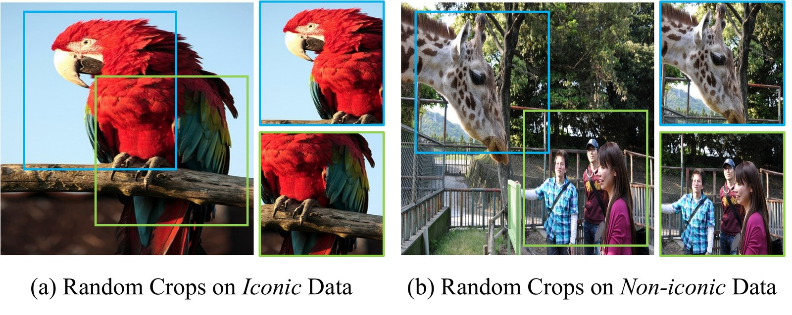
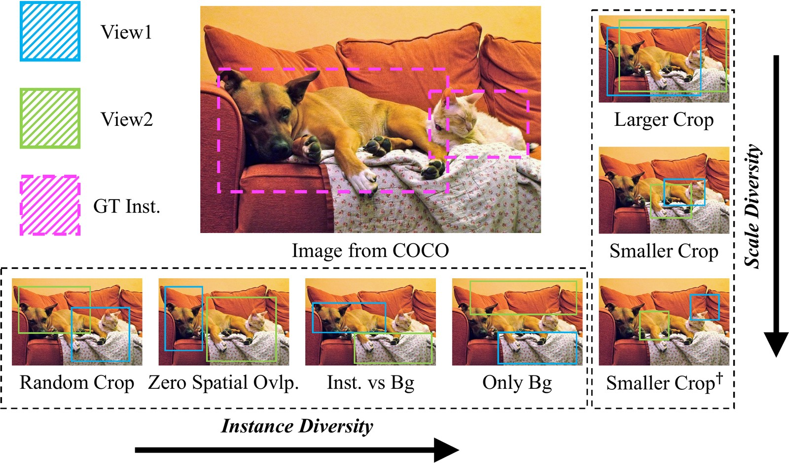
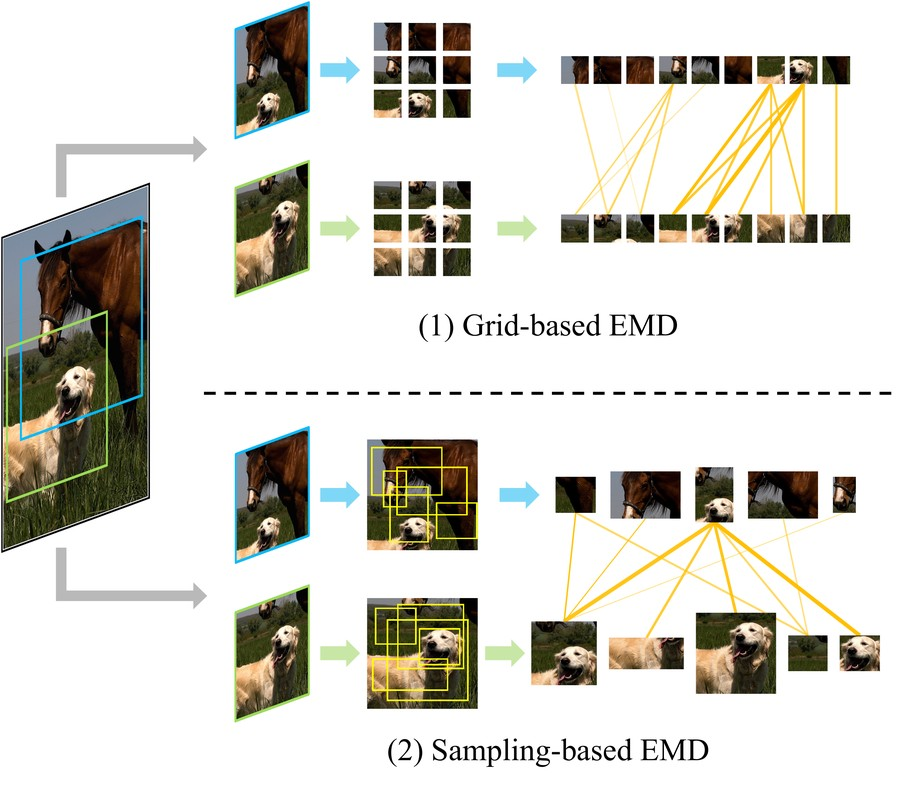
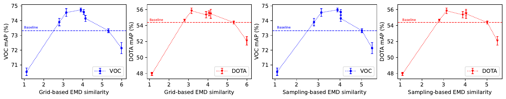
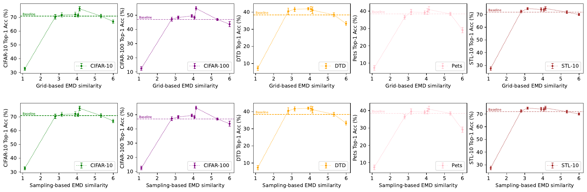
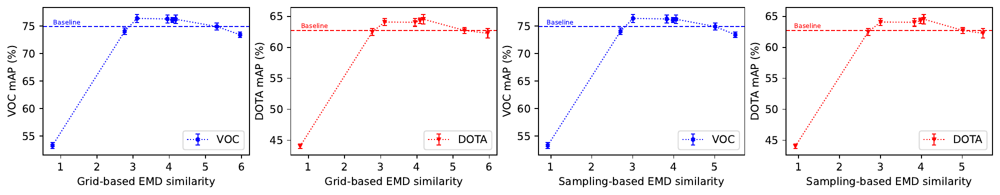
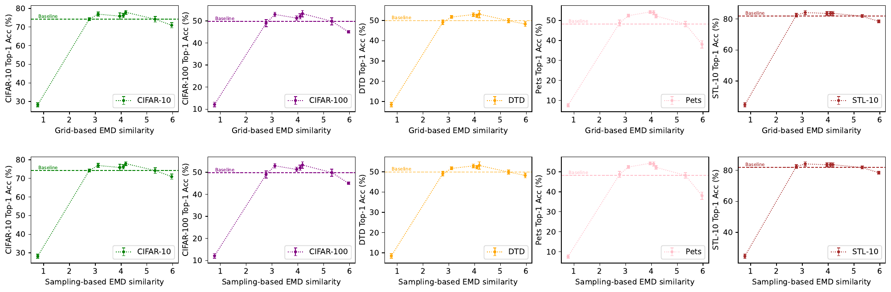

Self-supervised learning (SSL) conventionally relies on the instance consistency paradigm, assuming that different views of the same image can be treated as positive pairs. However, this assumption breaks down for non-iconic data, where different views may contain distinct objects or semantic information. In this paper, we investigate the effectiveness of SSL when instance consistency is not guaranteed. Through extensive ablation studies, we demonstrate that SSL can still learn meaningful representations even when positive pairs lack strict instance consistency. Furthermore, our analysis further reveals that increasing view diversity, by enforcing zero overlapping or using smaller crop scales, can enhance downstream performance on classification and dense prediction tasks. However, excessive diversity is found to reduce effectiveness, suggesting an optimal range for view diversity. To quantify this, we adopt the Earth Mover’s Distance (EMD) as an estimator to measure mutual information between views, finding that moderate EMD values correlate with improved SSL learning, providing insights for future SSL framework design. We validate our findings across a range of settings, highlighting their robustness and applicability on diverse data sources.
SSL aligns different views of the same image, relying on the instance consistency paradigm, which considers each image as a separate class: different augmentations of an image are treated as positive pairs, while augmentations from other images serve as negatives.
This paradigm works remarkably well for iconic datasets, where images typically feature a single, dominant object. In contrast, non-iconic datasets, such as COCO and OpenImages, often feature complex scenes with multiple objects and diverse backgrounds, so two augmented views from the same image may not contain the same object or share consistent semantic information (Figure 1). Surprisingly, despite the breakdown of instance consistency on non-iconic data, SSL methods can still achieve competitive performance, raising a critical research question: Is instance consistency a strict requirement for self-supervised learning?
We conduct ablation experiments with MoCo-v2 and DINO, systematically varying the shared instance semantics between the positive pair (v1, v2). Given target instances with ground-truth bounding boxes, we introduce five configurations (Figure 2):

| Config | COCO | ImageNet-100 | ||||||||
|---|---|---|---|---|---|---|---|---|---|---|
| CIFAR-10 | CIFAR-100 | DTD | Pets | STL-10 | CIFAR-10 | CIFAR-100 | DTD | Pets | STL-10 | |
| Baseline | 70.90 | 47.03 | 38.40 | 38.40 | 71.84 | 71.85 | 48.24 | 39.26 | 43.85 | 75.31 |
| Lower Bound | 32.72−38.18 | 12.40−34.63 | 7.29−31.11 | 7.28−31.12 | 27.59−44.25 | 32.64−39.12 | 12.22−36.02 | 6.65−32.61 | 7.09−36.76 | 28.36−46.95 |
| Spatial Ovlp. = 0 | 71.75+0.85 | 48.45+1.42 | 41.65+3.25 | 39.53+1.13 | 74.42+2.58 | 74.72+2.87 | 51.95+3.71 | 46.01+6.75 | 46.70+2.85 | 76.69+1.38 |
| Inst. vs Bg | 76.20+5.30 | 54.79+7.76 | 41.12+2.72 | 40.90+2.50 | 74.75+2.91 | 75.71+3.86 | 53.21+4.97 | 42.77+3.51 | 45.11+1.26 | 77.38+2.07 |
| Only Bg | 72.13+1.23 | 49.47+2.44 | 41.91+3.51 | 39.20+0.80 | 73.91+2.07 | 73.73+1.88 | 50.62+2.38 | 43.40+4.14 | 45.03+1.18 | 76.56+1.25 |
| Larger Crop | 67.02−3.88 | 43.64−3.39 | 33.24−5.16 | 29.05−9.35 | 69.99−1.85 | 66.72−5.13 | 42.15−6.09 | 34.63−4.63 | 36.33−7.52 | 72.94−2.37 |
| Smaller Crop | 71.36+0.46 | 48.28+1.25 | 41.76+3.36 | 39.81+1.41 | 73.69+1.85 | 74.97+3.12 | 51.59+3.35 | 44.63+5.37 | 45.90+2.05 | 76.92+1.61 |
| Smaller Crop† | 70.34−0.56 | 47.26+0.23 | 40.43+2.03 | 36.44−1.96 | 72.26+0.42 | 67.72−4.13 | 50.21+1.97 | 40.96+1.70 | 40.37−3.48 | 75.65+0.34 |
| Config | COCO | ImageNet-100 | ||
|---|---|---|---|---|
| VOC-0712 | DOTA-v1.0 | VOC-0712 | DOTA-v1.0 | |
| random init. | 53.58 | 31.59 | 53.38 | 31.59 |
| Lower Bound | 70.54−2.78 | 47.94−6.44 | 69.97−3.94 | 48.96−6.34 |
| Baseline | 73.32 | 54.38 | 73.91 | 55.30 |
| Spatial Ovlp. = 0 | 74.55+1.23 | 55.84+1.46 | 74.87+0.96 | 56.23+0.93 |
| Inst. vs Bg | 74.15+0.83 | 55.47+1.09 | 74.35+0.44 | 56.65+1.35 |
| Only Bg | 74.73+1.41 | 55.34+0.96 | 74.43+0.52 | 56.65+1.35 |
| Larger Crop | 72.14−1.18 | 52.09−2.29 | 73.40−0.51 | 54.06−1.24 |
| Smaller Crop | 74.58+1.26 | 55.52+1.14 | 74.49+0.58 | 56.26+0.96 |
| Smaller Crop† | 73.90+0.58 | 54.68+0.30 | 74.09+0.18 | 55.63+0.33 |
Results. As expected, the Lower Bound yields the lowest performance, highlighting the importance of shared information between positive pairs. Surprisingly, all other configurations (Zero Spatial Overlap, Instance vs Bg, and Only Bg) outperform the baseline in classification (Table 1) and object detection (Table 2). This suggests that SSL is capable of leveraging broader contextual cues beyond instance consistency, including shared background patterns, consistent camera viewpoints, and general color style, as long as both views are sampled from the same image.
While these configurations reduce the instance consistency, they simultaneously increase diversity between positive pairs, yet still serve as a valid, and even better supervision signal. We regulate this diversity by varying crop scales:
Results. Smaller Crop consistently outperforms the baseline, whereas Larger Crop leads to a significant performance drop, suggesting that excessive redundancy between views can hinder SSL effectiveness. Interestingly, while Smaller Crop and Zero Spatial Overlap individually boost performance, their combination does not yield additional gains and instead results in a slight performance drop.

To quantify this diversity, we adopt Earth Mover’s Distance (EMD) as an estimator to measure the shared information between positive pairs, which provides an estimation of augmentation quality before model pre-training.
Implementations. Following Zhang et al. (2020), we extract the features of patches of the two views with a pre-trained ResNet-50, using two strategies (Figure 3): grid-based, where each view is divided into uniform grids with grid factors of 2 and 3, and sampling-based, where each view is randomly sampled into 9 patches of varying sizes and aspect ratios.
Results. Figure 4 reveals a clear reverse-U relationship between the EMD score and downstream accuracy. Configurations with moderate EMD scores (ranging from 3 to 4) consistently yield the highest performance, while very high (above 5) or very low EMD scores (below 2) exhibit a drop in downstream accuracy, indicating that extreme overlap or excessive diversity between views can hinder SSL’s ability to learn meaningful feature representations.




EMD scores in Figure 4 are scaled by 10 for better visualization.
Suggestions for Positive Pair Selection. Our results suggest pre-calculating EMD scores before pre-training: the optimal EMD range lies between the baseline score (upper bound) and that of Smaller Crop† (lower bound).
@article{qin2025beyond,
title = {Beyond Instance Consistency: Investigating View
Diversity in Self-supervised Learning},
author = {Qin, Huaiyuan and Yang, Muli and Hu, Siyuan and Hu, Peng and
Zhang, Yu and Gong, Chen and Zhu, Hongyuan},
journal = {Transactions on Machine Learning Research},
issn = {2835-8856},
year = {2025},
url = {https://openreview.net/forum?id=urWCU3YMA0}
}This research is supported by the EDB Space Technology Development Programme under Project S22-19016-STDP and the National Natural Science Foundation of China under Grant 62576089. The authors sincerely thank the Reviewers and Action Editor for their valuable and constructive feedback.
This page is adapted from the ECHO project page, itself built on the Nerfies template.